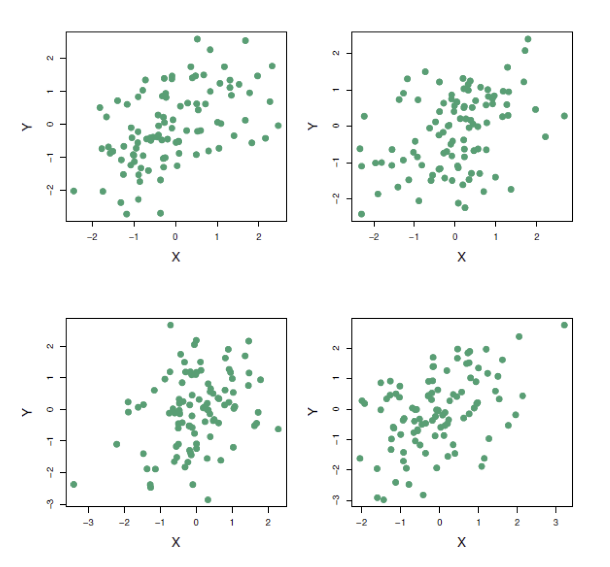
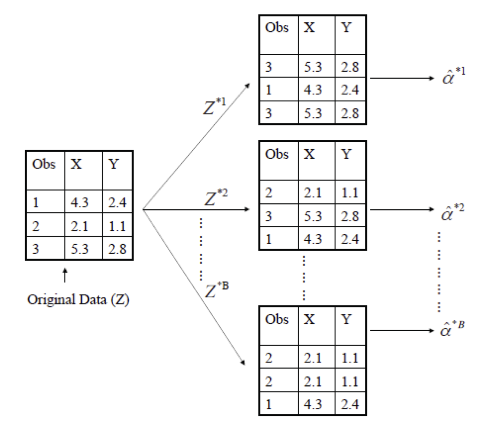
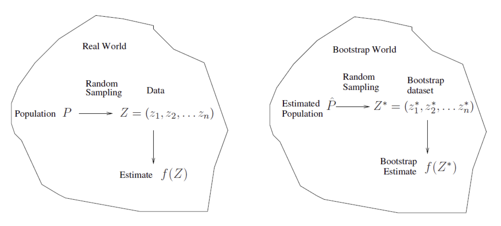
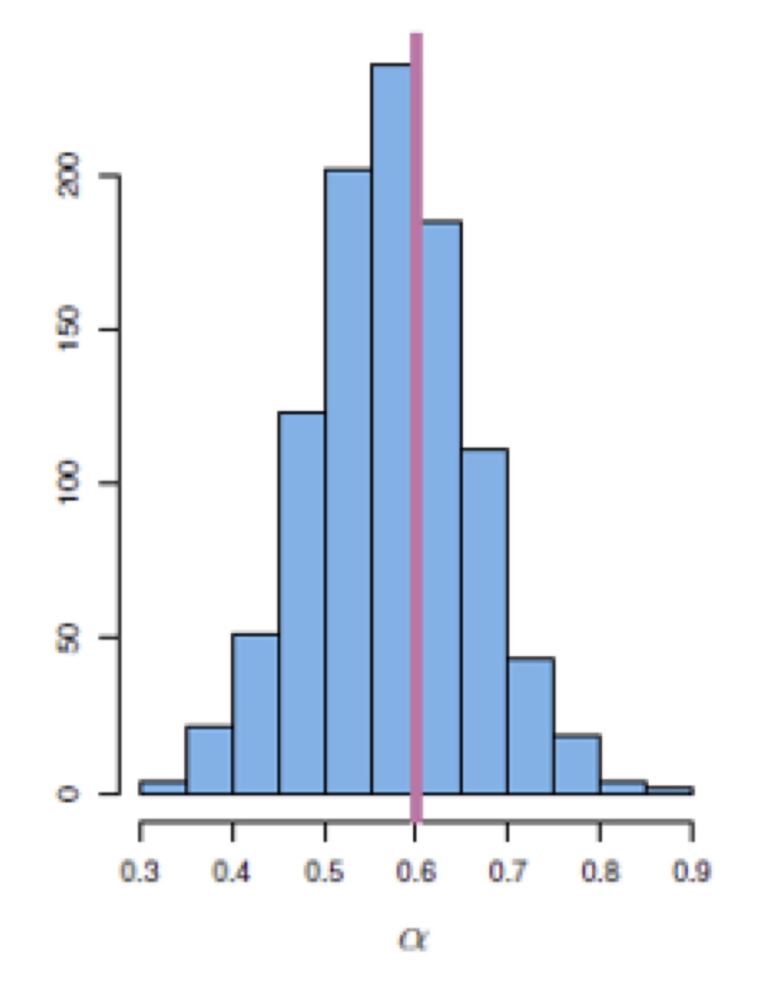
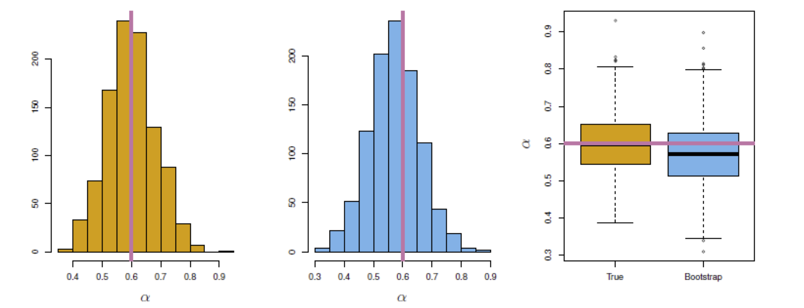
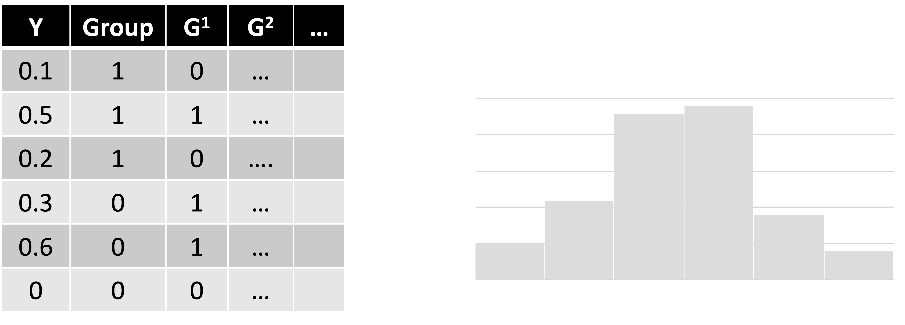

Fundamentals of
Data Analytics and
Predictions
Bootstrap
Xi (Rossi) LUO
Department of Biostatistics and Data Science
School of Public Health
The University of Texas Health Science Center at Houston
Bootstrap
- The bootstrap is a flexible and powerful statistical tool that can be used to quantify the
uncertainty associated with a given estimator or statistical learning method
- For example, it can provide an estimate of the standard error of a coefficient, or a confidence
interval for that coefficient.
Where Does the Name Come From?
- The use of the term bootstrap derives from the phrase to pull onselfup by one’s bootstraps,
widely thought to be based on one of the 18th century “The Surprising Adventures of Barn
Munchausen” by Rudolph Erich Raspe:
- The Baron had fallen to the bottom of a deep lake. Just when it looked like all was
lost, he
thought to pick himself up by his own bootstraps.
A Simple Example—1
-
Suppose that we wish to invest a fixed sum of money in two financial assets that yield returns
of X and Y, respectively, where X and Y are random quantities
-
We will invest a fraction ùõº of our money in X, and will invest the remaining 1‚àíùõº in Y
-
We wish to choose ùõº to minimize the total risk, or variance, of our investment. In other words,
we want to minimize $ùëâùëéùëü (\alpha X+({1-\alpha)Y})$
-
One can show that the value that minimizes the risk is given by
-
$\alpha=\frac{{\alpha_Y}^2-\alpha_{XY}}{{\alpha_X}^2+{\alpha_Y}^2-2\alpha_{XY}}$
- where ${\alpha_X}^2=Var(x)$, ${\alpha_Y}^2=Var(Y)$ and ${\alpha_{XY}}^2=Cov(XY)$
A simple example-2
- But the values of ${\alpha_X}^2$,$ {\alpha_Y}^2$, and ${\alpha_{XY}}^2$are unknown
- We can compute estimates for these quantities, $\hat{{\alpha_X}}^2$,$\hat{{\alpha_Y}}^2$, and
$\hat{{\alpha_{XY}}}^2$, using a data set that contains measurements for X and Y
- We can then estimate the value of ùõº that minimizes the variance of our investment using
$\hat{\alpha}=\frac{\hat{\alpha_Y}^2-\hat{\alpha_{XY}}}{\hat{\alpha_X}^2+\hat{\alpha_Y}^2-\hat2\alpha_{XY}}$
A Simple Example—3

- Each panel displays 100 simulated returns for investments X and Y. From left to right
and top to bottom, the resulting estimates are ùõº are 0.576, 0.532, 0.657, and 0.651
Example Continued—4
- To estimate the standard deviation of $\hat{\alpha}$, we repeated the process of simulating 100
paired observations of X and Y, and estimating $\alpha$ 1,000 times
- We thereby obtained 1,000 estimates for ùõº, which we can call
$\hat{\alpha_1},\hat{\alpha_2}...\hat{\alpha_{100}}$
- For these simulations the parameters were set to $\alpha_x^2=1, \alpha_Y^2=1.25$ and
$\alpha_{XY}=0.5$, and so we know that the true value of $\alpha$ is 0.6 (indicated by the red
line in the graph in a few slides)
Example Continued—5
- The mean over all 1,000 estimates for ùõº is very close to $\alpha$ =0.6, and the standard
deviation of the estimates is
$Average=\bar{\alpha}=\frac{1}{1000}\sum_{r=1}^{1000}=\hat{\alpha_r}=0.5996$
$Standard$ $deviation
=\sqrt{\frac{1}{1000}\sum_{r=1}^{1000}(\hat{\alpha_r}-\bar{\alpha})^2}=0.083$
- This gives us a very good idea of the accuracy of $\hat{\alpha}:SE(\hat{\alpha})\approx0.083$
- So roughly speaking, for a random sample from the population, we would expect $\alpha$ to differ
from ùõº by approximately 0.08, on average
Conceptualizing Bootstrap
- In reality, we do not know what the true population is. Therefore, we cannot apply the outline
above. We cannot generate new samples from the original population
- However, the bootstrap approach allows us to use a computer to mimic the process of obtaining
new data sets, so that we can estimate the variability of our estimate without generating
additional samples
- Rather than repeatedly obtaining independent data sets from the population, we instead obtain
distinct data sets by repeatedly sampling observations from the original data set with
replacement
- Each of these “bootstrap data sets” is created by sampling with replacement, and is
the same
size as our original dataset. As a result some observations may appear more than once in a given
bootstrap data set and some not at all
Example With Just 3 Observations—1

- A graphical illustration of the bootstrap approach on a small sample containing n=3
observations
- Each bootstrap data set contains n observations, sampled with replacement from the original
data set
- Each bootstrap data set is used is used to obtain an estimate of $\alpha$
Example With Just 3 Observations—2
- Denoting the first bootstrap data set by $Z^{*1}$, we use $Z^{*1}$, to produce a new
bootstrap estimate for $\alpha$, which we call $\hat{\alpha^{*1}}$
- This procedure is repeated B times for some large value of B (say 1000 or 10,000), in order
to produce B different bootstrap data sets, $Z^{*1},Z^{*2},Z^{*B} $, and B corresponding
$\alpha$ estimates, $\hat{\alpha^{*1}},\hat{\alpha^{*2}},\hat{\alpha^{*B}}$
- We estimate the standard error of these bootstrap estimates using the formula
$SE_B
(\hat{\alpha})=\sqrt{\frac{1}{B-1}\sum_{r=1}^{B}(\hat{\alpha}^{*r}-\bar{\hat{\alpha}}^*)^2}$
- This serves as an estimate of the standard error of $\hat{\alpha}$ estimated from the
original data set. In the figure, bootstrap results are in blue. For this example $SE_b
(\hat{\alpha})=0.087$
A General Picture for the Bootstrap

The Bootstrap in General
- In more complex data situations, figuring out the appropriate way to generate bootstrap samples
can require some thought
- For example, if the data is a time series, we cannot simply sample the observations with
replacement (why not?)
- We can instead create blocks of consecutive observations, and sample those with replacements.
Then we paste together sampled blocks to obtain a bootstrap dataset
Other Uses of the Bootstrap
- Primarily used to obtain standard errors of an estimate
- Also provides approximate confidence intervals for a population parameter. For example,
looking at the histogram, the 5% and 95% quantiles of the 1000 values is (0.43, 0.72)
- This represents an approximate 90% confidence interval for the true $\alpha$
- How do we interpret this confidence interval?
- The above interval is called a Bootstrap Percentile confidence interval. It is
the simplest
method (among many approaches for obtaining a confidence interval from the bootstrap.

Results

- Left: A histogram of the estimates of ùõº obtained by generating 1,000 simulated data sets
from the true population.
- Center: A histogram of the estimates of ùõº obtained from 1,000 bootstrap samples from a
single data set.
- Right: The estimates of ùõº displayed in the left and center panels are shown as boxplots. In
each panel, the pink line indicates the true value of $\alpha$
Can the Bootstrap Estimate Prediction Error?
- In cross-validation, each of the ùêæ validation folds is distinct from the other ùêæ‚àí1 folds used
for training: there is no overlap. This is crucial for its success. Why?
- To estimate prediction error using the bootstrap, we could think about using each bootstrap
dataset as our training sample, and the original sample as our validation sample.
- But each bootstrap sample has significant overlap with the original data. About two-thirds of
the original data points appear in each bootstrap sample
- This will cause the bootstrap to seriously underestimate the true prediction error. Why?
- The other way around – with original sample=training sample, bootstrap dataset=validation sample
– is worse!
Removing the Overlap
- In cross-validation, each of the ùêæ validation folds is distinct from the other ùêæ‚àí1 folds used
for training: there is no overlap. This is crucial for its success. Why?
- But the method gets complicated, and in the end, cross-validation provides a simpler, more
attractive approach for estimating prediction error
The Bootstrap Versus Permutation Tests–1
- The bootstrap samples from the estimated population, and uses the results to estimate standard
errors and confidence intervals
- Permutation methods sample from an estimated null distribution for the data and use this to
estimate p-values and False Discovery Rates for hypothesis tests
- The bootstrap can be used to test a null hypothesis in simple situations e.g. if ùúÉ=0 is the
null hypothesis, we check whether the confidence interval for ùúÉ contains zero
- Can also adapt the bootstrap to sample from a null distribution but there’s no real advantage
over permutations
The Bootstrap Versus Permutation Tests–2

Permutation Test in Two Sample Mean
- Null hypothesis: same means frmo two groups, say A and B
- Two sample t-test: distribution assumptions
- Permutation test:
- Under null, data points are exchangeable
- Calculate the mean difference under the observed labels, $D_o$
- Random permute the labels, calculate the mean diff for each permutation, lots of
them, to capture the null distribution
- Determine how extrame $D_o$ is under the null distribution, e.g. % of permutations that
yield higher or lower mean diff values
Permutation vs Bootstrap
- Both are nonparametric
- Bootstrap samples from the original, permutation test rearrange
- Permutation mainly for testing, bootstrap for a wide range of (more complex) inference problems
- Permutation relies on exchangeability
- Permutation computationally heavier
Bootstrap Summary
- Most commonly used to provide a measure of accuracy of a parameter estimate or of a given
learning method